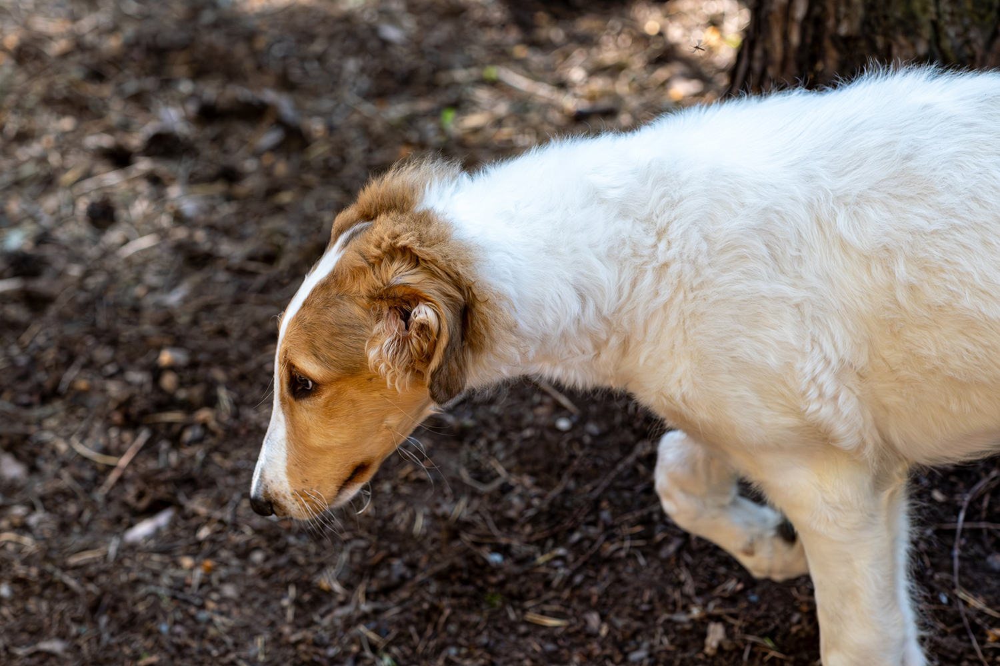
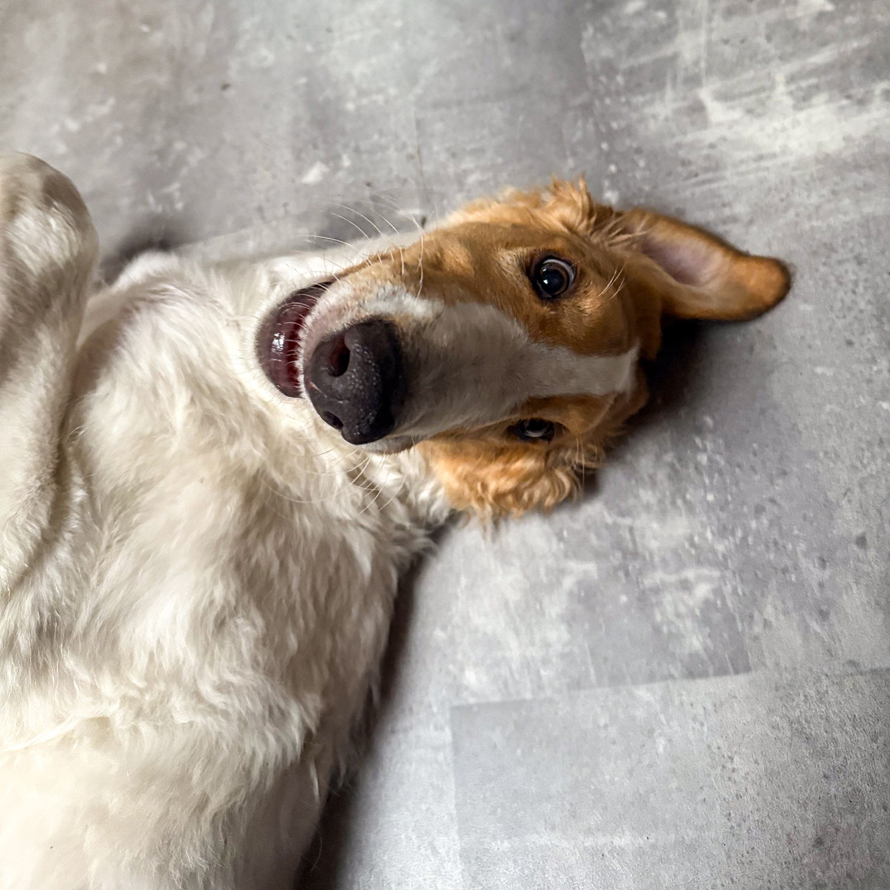
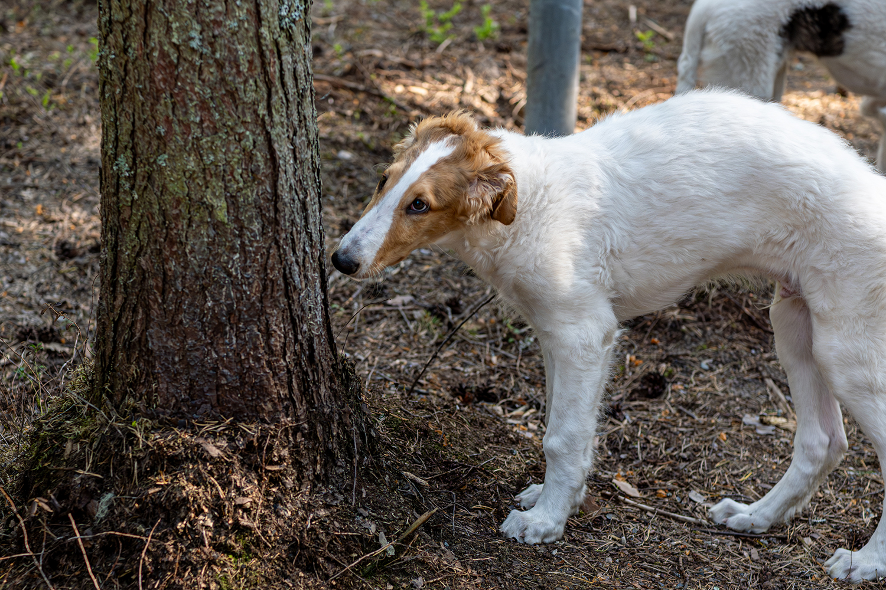

Stellar Chaos Hunter's Moon
Male Borzoi puppy – 15 weeks old – Looking for a home

Hunter's Moon is a confident and well-balanced young male, currently 15 weeks old. He has a curious and social nature, adapts easily to new situations, and approaches everyday life with calm interest. He enjoys exploring new environments, meeting people and other dogs, and learning about the world around him in a steady and open way.
Structurally, Hunter's Moon is developing nicely – with balanced proportions, a clean outline, and good movement for his age. He is not extreme in any way, but rather moderate and correct, which gives him potential for both conformation shows and lure coursing in the future, depending on his new owner's interests.

Hunter’s Moon's pedigree combines lines known for both sound structure and performance. He has been raised in a home environment with daily handling, exposure to various surfaces and surroundings, and age-appropriate experiences to support healthy development. He has started basic training and is used to traveling in a car, eating raw and kibble-based meals, and living alongside adult dogs.
We’re looking for an active and committed home where Hunter's Moon will be a valued family member first and foremost, with the possibility to explore hobbies together as he grows.

If you’re interested in hearing more about Hunter and whether he could be a good fit for you, feel free to get in touch!
